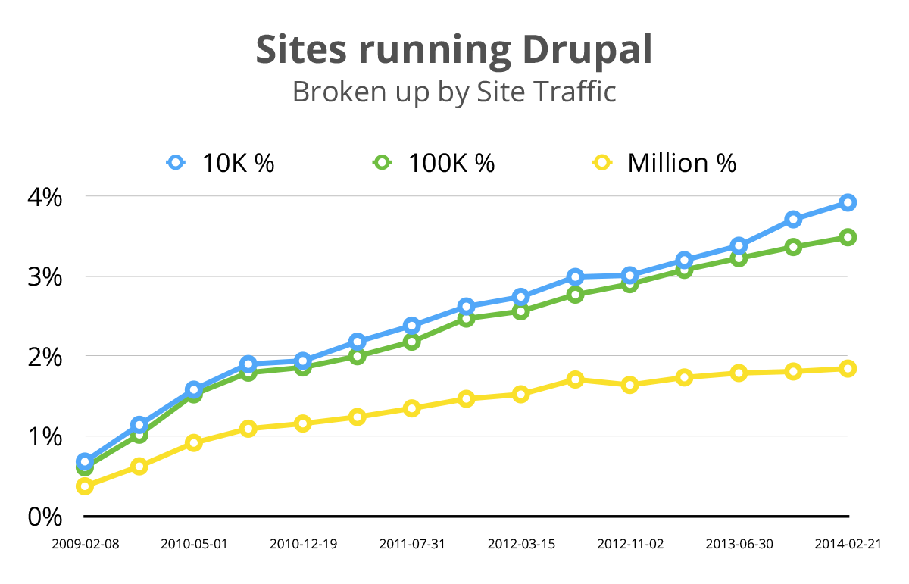

Backdrop CMS
for small-medium sized business
& non-profits
A fork of Drupal
Different tools for different jobs


Backdrop Co-Founders
Jen Lampton
Backdrop Project Lead
@jenlampton
Nate Haug
Backdrop Technical Lead
@quicksketch
We are
Drupal Developers
- Habitat for Humanity
- The Grammys
- Oxfam International
- Harvard
- Bay Area Rapid Transit
- Tesla Motors
We are
Drupal Trainers
- Combined we’ve taught over 1,500 students
- Both created materials for in-person training classes
- Both featured in online training videos
- Nate: Lullabot trainer since 2005
- Jen: Director of training at Chapter Three, 2010-2012
- Nate: Co-author of the first O'Reilly book "Using Drupal"
We are
Drupal Core Developers
Nate
- AJAX Framework & drag-and-drop
systems in Drupal 6 - File & Image modules
in Drupal 7 - Dialog system & CKEditor
in Drupal 8
Jen
- First core patch included
in Drupal 7.14 - Drupal core usability team
member, D7 & D8 - Twig initiative lead
Drupal 8 (2011 - 2013)
We are
Drupal Community Advocates
- Lead Organizer, Bay Area Drupal Camp
- Organizing Committee, DrupalCon SF 2010
- Spoken @ 95+ Drupal Camps & Cons, combined.
Why Fork Drupal?

Direction
Drupal 8 is "going enterprise"
Drupal 8 beta is the latest, greatest release of the world's most widely used enterprise web CMS.
Drupal Marketshare
What about those of us who
aren't enterprise?
Drupal Direction: Code
- Huge codebase (3x more Drupal code by bytes)
- More dependencies (external libraries)
- Most code rewritten to be Object Oriented
- Symfony-framework based HTTP Kernel
- Increased complexity in coding patterns
- dependency injection
- controllers for services
- Doctrine-based class annotations
- etc, etc, etc
Not everyone needs "better" software.
Drupal Direction: Cost
- Drupal is free!
- Specialized (expensive) developers
- Specialized (expensive) hosting
- Ongoing maintenance costs
- Migration from version to version (not upgrades)
Cost is already a huge factor.

Decision Making Process
Drupal Decision Making Process
Do-Ocracy
Drupal is a do-ocracy, [...] things happen within the community because people are willing to do them.
- Andrea "zendoodles" Zoper
http://blog.nerdery.com/2013/02/do-ocracy-and-the-drupal-contrib-ecosystem
For example...
Twig

Rich-Text
Organic Growth!
The most motivated people can create change.
But who are the most
motivated people?
Backdrop Decision Making Process
PMC
Project Management Committee
The PMC's Responsibilities
- The PMC primarily exists to handle conflict resolution.
- The PMC also sets the overall direction of the project.
- The PMC ensures that each change follows the ideals of the project philosophy.
- The PMC can change the project philosophy if necessary.
Backdrop Principles
- Backwards compatibility is important
- Write code for the majority
- Include features for the majority
- Ensure Backdrop can be extended
- Meet low system requirements
- Plan and schedule releases
- Always remain Free & Open Source
Backdrop Mission
Backdrop CMS enables people to build highly customized websites, affordably, through collaboration and open source software.
Backdrop Mission
Backdrop CMS enables people to build highly customized websites, affordably, through collaboration and open source software.
Affordable web development
- Increase the out-of-box functionality.
- Increase the ease of maintenance.
- Simplify the architecture.
- Always provide an upgrade path.
- Consider backwards compatibility:
- Make it easy for existing developers
- Make it fast to port modules
- More!
When can I use it?
NOW
Backdrop 1.0 released January 15, 2015
Backdrop 1.1 released May 15, 2015
Backdrop 1.2 coming Sept 15, 2015
But what about contrib?
Top Drupal Modules
- views
- ctools
- token
- pathauto
- libraries
- entity
- admin_menu
- webform
- imce
- date
- google_analytics
- wysiwyg
- jquery_update
- ckeditor
- link
- backup_migrate
- rules
- module_filter
- In core
- Ported
- Underway
But what about the community?
Community growth
- Total new or ported modules, themes or layouts: 148
- Projects with official releases: 76
- Contributed group members: 38
Can I see it in action?
Demo Time!
Get involved
Google Hangouts every Thursday 4pm ET
mini-sprints every Thursday after the meeting
IRC: #backdrop
http://backdropcms.org
github.com/backdrop/backdrop
@backdropcms
Questions?
IRC: #backdrop
http://backdropcms.org
github.com/backdrop/backdrop
@backdropcms
Backdrop CMS
for small-medium sized business
& non-profits
Image Credits
SquareSpace: http://commons.wikimedia.org/wiki/File:Squarespace_Logo.png
Wordpress: https://wordpress.org/about/logos
Backdrop: https://backdropcms.org/about/logo
Drupal: https://www.drupal.org/node/9068
USS Enterprise: http://thescifichristian.com/2013/09/tng-theology-remember-me
Raised hands: http://frenchspin.com/en/site/everything/articles
Twig logo: http://twig.sensiolabs.org/
CKEditor logo: https://www.google.com/url?sa=i&rct=j&q=&esrc=s&source=images&cd=&ved=&url=http%3A%2F%2Fblog.balfes.net%2F2014%2F03%2F13%2Fnew-video-ckeditor-in-websphere-commerce-introduction%2F&psig=AFQjCNEzZ9IdLZUH2GpftZQT1GjS_-IH3w&ust=1442082019604172